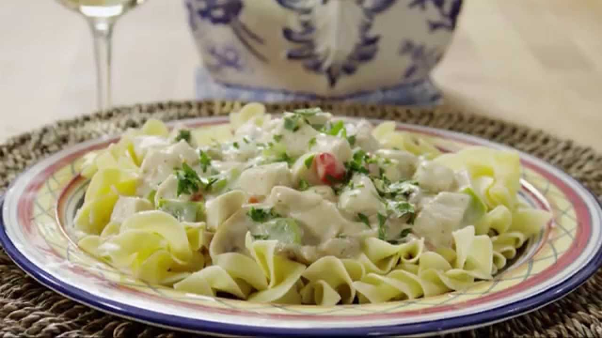

Favourite Dish
Chicken Ala King
Directions
- Cook and stir drained mushrooms and green pepper in
butter or margarine over medium heat for 5 minutes.
Remove from heat.
- Blend in flour, salt, and pepper. Cook over low heat,
stirring constantly, until mixture is bubbly. Remove from heat.
- Stir in instant bouillon, milk, water, and reserved mushroom liquid.
Heat to boiling, stirring constantly. Boil and stir for 1 minute.
- Stir in chicken and pimiento. Heat through.
Ingrediants
- 1 (4.5 ounce) can mushrooms, drained, liquid reserved.
- 1 green bell pepper, chopped
- 1/2 cup butter
- 1/2 cup all-purpose flour
- 1 teaspoon salt
- 1/4 teaspoon ground black pepper
- 1 1/2 teaspoons chicken bouillon powder
- 1 1/2 cups milk
- 1 1/4 cups hot water
- 4 cooked, boneless chicken breast halves, chopped
- 4 ounces chopped pimento.

What I learned:
- These ingrediants are not expensive
- It does not take long to prepare
- It is easy to follow the steps